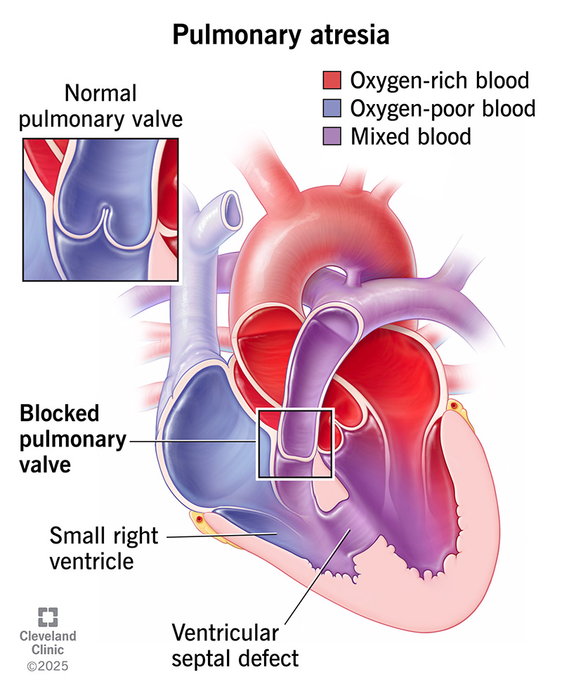

定義與定位
Pulmonary atresia 不只是重度 pulmonary stenosis；閉鎖可在瓣膜或更長段流出道，沒有正常的右心室至肺動脈前向血流。以下以兩個主要病型整理，其他複雜心臟連接異常需另外分析。[1:1][3]
| 病型 | 中隔與右心 | 決策最重要的問題 |
|---|---|---|
| Pulmonary atresia with intact ventricular septum（PA/IVS） | 心室中隔完整；right ventricle（RV）與 tricuspid valve（TV）常有不同程度發育不足 | RV／TV 能否支持肺循環？冠狀動脈是否依賴 RV 壓力？ |
| Pulmonary atresia with ventricular septal defect（PA/VSD） | 有 ventricular septal defect（VSD）；RV 常較能發育，可屬 TOF with pulmonary atresia | 原生肺動脈是否連續、夠大？每個肺段靠哪條血管供血？ |
| PA/VSD 合併 major aortopulmonary collateral arteries（MAPCAs） | 主動脈或其分支的側枝供應部分／全部肺段，可能同時有原生肺動脈供血 | 哪些肺段只有單一血源、哪些雙重供血？是否有狹窄或肺血管病變？ |
PA/IVS 與 PA/VSD 不是同一條病程的輕重兩端。 本文以 PA/IVS、PA/VSD 指病型；肺動脈寫全名，避免把 PA 同時當作 atresia 與 artery 而混淆。[4][5]
心臟解剖：閉鎖之外，還要看中隔與肺血流

圖 1｜Cleveland Clinic 的肺動脈閉鎖示意：主圖標出 blocked pulmonary valve 與 VSD，左上小圖是正常肺動脈瓣。因此這張是「合併 VSD」的示意，不能拿來代表 PA/IVS。原圖另畫出 small right ventricle，但 PA/VSD 並非一律右心室小，仍以個別影像為準。原圖未修改，來源：Cleveland Clinic，2025。
| 看圖／超音波時找什麼 | 為什麼 |
|---|---|
| RV → 肺動脈的通道 | 區分膜性瓣閉鎖與較長段肌性閉鎖，影響能否導管穿孔或需外科重建 |
| VSD 有無 | 決定是 PA/IVS 還是 PA/VSD；不是每位都需要關 VSD |
| Patent ductus arteriosus（PDA，開放性動脈導管） | 可能是新生兒主要肺血流來源；變窄時可迅速惡化 |
| 房間交通 | PA/IVS 的體靜脈回流需經房間交通到左心；限制性交通可能造成右心房壓力升高與低心輸出 |
| 原生肺動脈與 MAPCAs | 必須畫出各肺段供血，不能只看中央肺動脈直徑 |
Right atrium（RA）／left atrium（LA）＝右／左心房；left ventricle（LV）＝左心室；aorta（Ao）＝主動脈。圖左側通常對應病人的右心。[1:2][6][5:1]
病因與機制
flowchart TD A["體靜脈 → RA"] --> B["房間交通"] B --> C["LA → LV"] C --> D["Ao：混合血"] D --> E["體循環"] D --> F["PDA"] F --> G["肺動脈 → 肺"] G -->|"肺靜脈"| C A --> H["TV → RV"] H --> I["肺動脈閉鎖<br/>無前向肺血流"] classDef danger fill:#fff0ed,stroke:#b42318,color:#7a271a class I danger
圖 2｜常見導管依賴型 PA/IVS 的血流拓樸，不是解剖位置圖。PDA 與房間交通各有功能：前者供應肺血流，後者讓體靜脈回流能到達左心；兩者不能互相替代。PA/VSD＋MAPCAs 不可直接套用此圖。[1:3][6:1]
臨床表現
| 表現 | 判讀重點 |
|---|---|
| 新生兒發紺、給氧改善有限 | 結構性肺血流受限；仍須並行排除肺病與感染 |
| 出生後隨 PDA 關閉而惡化 | 提示導管依賴性肺血流；可進展至酸中毒與低灌流 |
| 呼吸急促、餵食困難、體重增加不佳 | 可來自低肺血流；有大量未受限制側枝時，也可能是肺血流過多與心衰竭 |
| 膚色尚可但肺血流不均 | MAPCAs 可使部分肺段高壓過灌流、另一些肺段血流不足；整體血氧不能代表每個肺段安全 |
| 無明顯典型射出性雜音 | 不能排除閉鎖；無血流通過的閉鎖瓣不會產生一般瓣狹窄的跨瓣血流雜音 |
嚴重發紺、意識或灌流改變、乳酸上升均需立即處理；不要把已知先天性心臟病的低血氧當作固定基線而忽略變化。[1:4][3:1][5:2]
診斷
| 檢查 | 必須回答的問題 |
|---|---|
| Echocardiography＋Doppler | 中隔完整嗎？閉鎖層次、RV／TV 大小與功能、PDA、房間交通及肺動脈解剖如何？是否提示冠狀動脈交通？ |
| 脈搏血氧飽和度（SpO₂）、blood gas／lactate、血壓與尿量 | 目前氧合與全身灌流是否足夠；不能只看單一 SpO₂ |
| PA/IVS 的冠狀循環評估 | 介入前是否已釐清 RVDCC？通常需專家心導管與血管攝影，超音波未見明顯異常不等於已排除 |
| PA/VSD 的電腦斷層血管攝影／心導管 | 原生肺動脈、PDA、MAPCAs、各肺段單一或雙重供血及狹窄；需要時取得壓力／血流資料 |
| Electrocardiogram（ECG）、胸部 X 光 | 輔助看節律、心室負荷與肺血流，不能取代解剖診斷 |
| 遺傳評估 | PA/VSD／TOF 型可合併 22q11.2 deletion 等，依表現安排諮詢與檢查 |
產前可由 fetal echocardiography 發現；出生後須重新確認生理狀態與可用肺血流。[6:2][3:2][2:2][5:3]
鑑別診斷
| 要區分的情境 | 判別重點 |
|---|---|
| Critical pulmonary stenosis | 仍有可辨認的瓣口／前向血流；治療不能只依發紺程度推定為閉鎖 |
| TOF with pulmonary stenosis | 有 VSD 與流出道阻塞，但仍可能有原生前向肺血流；完整閉鎖需重新規劃肺血流來源 |
| TGA | 重點是心室與大血管連接、兩循環混合；不是所有新生兒發紺都靠增加肺血流解決 |
| Tricuspid atresia | 主要缺損在 RA → RV 的入口，與 pulmonary atresia 的出口不同 |
| 肺病／persistent pulmonary hypertension of the newborn | 同時看肺部、肺壓與結構；不能只靠給氧反應作最後診斷 |
治療
完整的術前穩定、介入選擇與術後紅旗集中在 Pulmonary atresia intervention。
| 情境 | 方向 |
|---|---|
| Duct-dependent pulmonary blood flow | 監測下 PGE₁，銜接 PDA stent 或外科分流／適合的重建 |
| PA/IVS：RV／TV 可用，且冠狀循環允許減壓 | 選定個案以導管穿孔／球囊擴張或外科打開流出道，評估雙心室循環潛力 |
| PA/IVS：RV 邊界大小／功能 | 依成長與血行動力學再評估雙心室或 one-and-a-half ventricle 路徑 |
| PA/IVS：嚴重 RV 發育不足或重要 RVDCC | 常需單心室分期緩和治療；嚴重冠狀循環或心室問題另評估移植 |
| PA/VSD ± MAPCAs | 依肺段供血盤點，選擇肺動脈成長策略／重建、必要時 unifocalization，再評估 RV–肺動脈連接與 VSD closure |
沒有所有病型共用的矯正月齡或單一 TV 尺寸門檻。 Single-ventricle palliation 是改道支持循環，不能寫成恢復正常雙心室解剖的「完整矯正」。[4:1][5:4][1:5]
併發症與預後
| 階段 | 追蹤重點 |
|---|---|
| 未建立穩定肺血流 | 急性缺氧、酸中毒、低灌流；MAPCAs 另留意肺血流過多與肺血管病變 |
| RV 減壓／雙心室路徑 | 殘餘流出道阻塞、肺動脈瓣逆流、RV 舒張／收縮功能、冠狀灌流 |
| 分流、支架或 RV–肺動脈 conduit | 血栓／狹窄、肺動脈分支問題及再介入需求 |
| Glenn／Fontan 路徑 | 持續的靜脈壓與循環限制、血栓及心律問題；RVDCC 病童仍可能有缺血風險。[7] |
最終循環型態、冠狀動脈與肺血管條件影響預後；所有路徑都需要終身先天性心臟追蹤。[8][1:6]
禁忌與陷阱
相關連結與來源
- Pulmonary atresia intervention — 穩定處置、介入／手術與追蹤
- TOF · TOF correction — 與典型 TOF with pulmonary stenosis 比較
- TGA · TGA correction — 新生兒發紺的另一條解剖路徑
- Pediatric heart disease — 小兒先天性心臟病入口
American Heart Association：Pulmonary Atresia，檢視日期 2026-07-31；PA/IVS 血流、橋接與長期照護。 ↩︎ ↩︎ ↩︎ ↩︎ ↩︎ ↩︎ ↩︎
Giglia et al.：Diagnosis and management of right ventricle-dependent coronary circulation in PA/IVS，Circulation 1992；原始血管攝影研究，用於區分交通與冠狀循環依賴，不能作為現代個案的單一選術標準。 ↩︎ ↩︎ ↩︎
Cleveland Clinic：Pulmonary Atresia，2025-07-14；病型、檢查與原始解剖圖。 ↩︎ ↩︎ ↩︎
Sukhavasi et al.：PA/IVS—Intended strategies，JTCVS 2022；RV／TV 與冠狀循環導向的策略、不同循環終點。 ↩︎ ↩︎
Stanford Children’s：Pulmonary artery reconstruction及中心的 PA/VSD／MAPCAs 外科策略；採用肺段供血與分期評估原則，不照搬中心特定數值門檻。 ↩︎ ↩︎ ↩︎ ↩︎ ↩︎
Texas Children’s：Pulmonary Atresia；房間交通、出生後評估與治療。 ↩︎ ↩︎ ↩︎
Elias et al.：Fontan survivors with PA/IVS remain at risk of myocardial ischaemia，EJCTS 2018；RVDCC 與 Fontan 後缺血／猝死風險的原始追蹤研究。 ↩︎
Wright et al.：Long-term outcomes after intervention for PA/IVS，Heart 2019；長期原始世代研究。 ↩︎